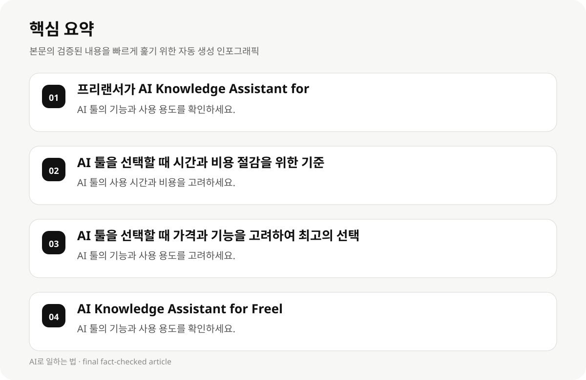

프리랜서가 AI Knowledge Assistant for Freelancers를 선택할 때 가장 중요한 고려 사항 #
프리랜서는 AI Knowledge Assistant for Freelancers를 선택할 때, 기능, 가격, 사용 용도, 시간 효율성, 그리고 개인의 업무 스타일을 고려해야 합니다. AI 툴은 업무 효율성과 시간 절감을 지원하기 때문에, 사용자 맞춤형으로 선택하는 것이 중요합니다.
AI Knowledge Assistant for Freelancers는 다양한 기능을 제공하며, 프리랜서가 업무를 자동화하고 효율적으로 처리할 수 있도록 도와줍니다. 그러나 선택 시, 툴의 기능과 사용 용도, 가격, 그리고 개인의 업무 스타일을 고려해야 합니다.
- AI 툴의 기능과 사용 용도를 확인하세요.
- 가격과 사용 용도를 고려하여 툴을 선택하세요.
- 프리랜서의 업무 스타일과 업무 유형을 반영하여 툴을 선택하세요.
AI 툴을 선택할 때 시간과 비용 절감을 위한 기준 #
프리랜서는 AI 툴을 선택할 때, 시간과 비용 절감을 위해 툴의 사용 용도, 기능, 그리고 사용 편의성을 고려해야 합니다. 툴의 사용 시간이 짧고, 비용이 저렴한 툴은 프리랜서에게 유리할 수 있습니다.
AI 툴의 사용 시간과 비용은 툴의 기능과 사용 용도에 따라 달라질 수 있습니다. 프리랜서는 툴의 사용 시간과 비용을 고려하여, 최적의 선택을 하도록 노력해야 합니다.
- AI 툴의 사용 시간과 비용을 고려하세요.
- 툴의 기능과 사용 용도를 반영하여 선택하세요.
- 프리랜서의 업무 스타일과 업무 유형을 반영하여 툴을 선택하세요.
AI 툴을 선택할 때 가격과 기능을 고려하여 최고의 선택 #
프리랜서는 AI 툴을 선택할 때, 가격과 기능을 고려하여 최고의 선택을 하도록 노력해야 합니다. 툴의 기능이 강력하지만 가격이 높다면, 프리랜서는 툴의 가치와 비용을 비교하여 선택해야 합니다.
AI 툴의 가격은 툴의 기능과 사용 용도에 따라 달라질 수 있습니다. 프리랜서는 툴의 기능과 사용 용도, 그리고 자신의 업무 스타일을 고려하여, 최적의 선택을 하도록 노력해야 합니다.
- AI 툴의 기능과 사용 용도를 고려하세요.
- 툴의 가격과 사용 시간을 비교하여 선택하세요.
- 프리랜서의 업무 스타일과 업무 유형을 반영하여 툴을 선택하세요.

AI Knowledge Assistant for Freelancers의 실전 활용 단계 #
AI Knowledge Assistant for Freelancers를 실전 활용하기 위해서는, 먼저 툴의 기능과 사용 용도를 확인하고, 프리랜서의 업무 스타일과 업무 유형을 반영하여 툴을 선택해야 합니다.
프리랜서는 AI 툴을 선택할 때, 툴의 사용 시간과 비용, 그리고 툴의 기능을 고려하여, 최적의 선택을 하도록 노력해야 합니다. 툴의 사용 시간이 짧고, 비용이 저렴한 툴은 프리랜서에게 유리할 수 있습니다.
- AI 툴의 기능과 사용 용도를 확인하세요.
- 툴의 사용 시간과 비용을 고려하여 선택하세요.
- 프리랜서의 업무 스타일과 업무 유형을 반영하여 툴을 선택하세요.
AI Knowledge Assistant for Freelancers의 실전 활용 사례 #
AI Knowledge Assistant for Freelancers를 실전 활용하기 위해서는, 프리랜서가 툴의 기능과 사용 용도를 확인하고, 툴의 사용 시간과 비용, 그리고 프리랜서의 업무 스타일과 업무 유형을 반영하여 툴을 선택해야 합니다.
AI 툴의 사용 시간과 비용은 툴의 기능과 사용 용도에 따라 달라질 수 있습니다. 프리랜서는 툴의 사용 시간과 비용을 고려하여, 최적의 선택을 하도록 노력해야 합니다.
- AI 툴의 기능과 사용 용도를 확인하세요.
- 툴의 사용 시간과 비용을 고려하여 선택하세요.
- 프리랜서의 업무 스타일과 업무 유형을 반영하여 툴을 선택하세요.
AI Knowledge Assistant for Freelancers의 실전 활용의 한계와 제한 #
AI Knowledge Assistant for Freelancers의 실전 활용에는 한계가 존재할 수 있습니다. 툴의 사용 시간과 비용, 그리고 프리랜서의 업무 스타일과 업무 유형에 따라, 툴의 효과는 달라질 수 있습니다.
프리랜서는 AI 툴의 사용 시간과 비용, 그리고 툴의 기능을 고려하여, 최적의 선택을 하도록 노력해야 합니다. 툴의 사용 시간이 짧고, 비용이 저렴한 툴은 프리랜서에게 유리할 수 있습니다.
- AI 툴의 사용 시간과 비용을 고려하세요.
- 툴의 기능과 사용 용도를 반영하여 선택하세요.
- 프리랜서의 업무 스타일과 업무 유형을 반영하여 툴을 선택하세요.